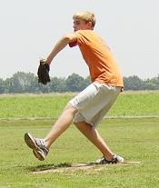
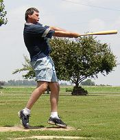
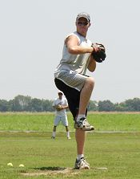
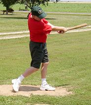
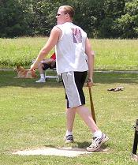
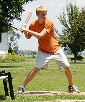

Robert Trimble prepares to bring one to the plate on Saturday July 5.
Trimble moved to 2-0 on the year by allowing just 2 runs in a complete game
win lowering his ERA to 1.20 on the year. |

Larry Winkler made his much-anticipated debut on Saturday finishing 2-for-11
with a pair of singles and an RBI. |

Dan Inboden pitched 5 strong innings allowing just 2 earned runs and 5 hits,
but suffered the loss in his first appearance this summer. |

Brian Garrard made a triumphant return to Corklestick on Saturday after
a 5-year absence. Garrard had not played a game since 1998, but managed
to go 2-for-5 in the win, while splitting at bats with Chris Cork. |

Dan Inboden watches his homerun sail into center field in the 9th inning
of Saturday's game. The homer cut the lead to 3-2, but wasn't enough. Inboden
finished 2-for-10 and scored twice. |

Robert Trimble had one of the game's biggest hits with his solo homer in
the bottom of the 8th that helped seal the 3-2 victory. Trimble was 2-for-11
in the game and is now hitting .263 for the year. |